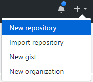

깃허브는 수많은 저장소를 보유하고 있는 최대의 깃 저장소입니다. 깃허브에 새로운 저장소를 만드는 방법을 알아보겠습니다.
저장소는 크게 공개용 저장소와 개인용 저장소로 구분할 수 있습니다. 공개용과 개인용의 관리 방법은 차이가 있지만, 처음에는 공개용 저장소로 만들어 실습을 합니다. 공개된 저장소는 제한 없이 무제한 만들어 사용할 수 있습니다.
새로운 저장소를 생성합니다. 대시보드에서 create a new repository를 선택하거나 우측 상단의 + 표시를 선택합니다.

[new repository]를 선택하면 새로운 저장소를 만들 수 있습니다.

새로운 저장소 생성 화면으로 전환됩니다. 먼저 저장소를 생성할 소유자(owner)를 선택할 수 있습니다.
소유자(owner)는 개인 개정 또는 생성한 조직을 선택할 수 있습니다. 다음은 저장소의 이름을 입력합니다. 이름은 대소문자, 숫자, 하이픈, 밑줄을 조합하여 사용이 가능합니다. 깃은 입력된 정보를 가지고 새로운 저장소를 생성합니다. 저장소의 구성은 url을 이용하여 표기합니다.
https://github.com/소유자/저장소
저장소의 이름은 선택한 소유자(owner) 안에서는 중복하여 생성할 수 없습니다. 하지만 생성한 프로젝트는 추후에 이동도 가능합니다.


README는 저장소 프로젝트의 포괄적인 정보를 담고 있습니다. 또한, 깃 저장소의 메인 페이지로 출력됩니다.

대부분의 많은 개발자는 README를 선택하지 않고 직접 작성한 후에 서버로 푸시합니다.
README 파일은 보통 마크다운 형식의 .md 확장자를 가집니다. 이 이외의 방식으로 작성할 수도 있는데, ASCIIDoc 형식의 .adoc로도 가능합니다. 만일 확장자를 지정하지 않았다면 일반 텍스트 파일로 인식합니다.
README 파일에는 배지 표시도 같이 출력할 수 있습니다. 배지는 자동화된 테스트 등을 표시하는 데 이용합니다.
프로젝트를 생성할 때마다 .gitignore 파일을 제작하는 것은 피곤할 수 있습니다. 또한, 프로젝트 유형 및 언어에 따라서 알려져 있는 불필요한 파일들을 미리 알 수 있습니다. 깃허브는 이러한 미리 알려진 프로그램 언어들에 대해 자동으로 .gitignore 파일을 생성하여 줍니다.
리스트를 클릭하면 다양한 언어별 .gitignore를 확인할 수 있습니다. 프로젝트 유형에 따라서 자동으로 .gitignore 파일을 생성합니다.
오픈 소스 라이선스는 다양한 종류가 있습니다. 또한, 라이선스 정보를 자신의 프로젝트에 표기하기 위한 파일을 생성하는 것은 힘듭니다. 깃허브는 간단하게 자신의 소스 라이선스를 선택하여 적용할 수 있습니다.
프로젝트 공 개시 적용할 라이선스의 유형을 선택할 수 있습니다.
저장소 생성 결과 화면입니다. 생성 화면은 README 체크 여부에 따라서 달라 집니다. README를 체크하지 않은 경우에는 설정을 위한 안내 방법을 출력합니다.
방법은 크게 2가지입니다. ① 새로운 로컬 저장소를 생성하고 원격 저장소를 연결하는 방법
② 기존의 저장소를 연결하는 방법

깃허브는 친절하게 저장소를 초기화 및 클론을 할 수 있는 안내 설명이 표시됩니다. 깃 명령어가 아직 익숙하지 않은 사용자에게는 좀 더 유용한 정보일 것입니다.